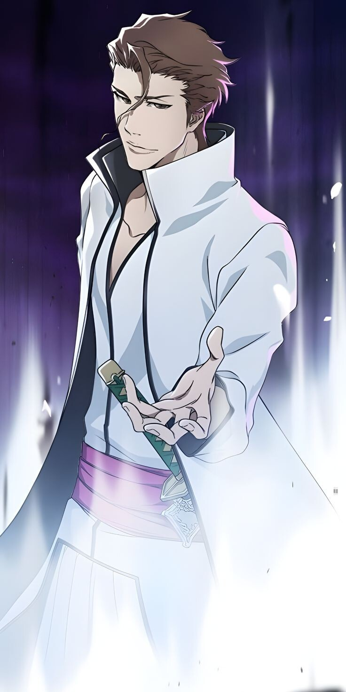

Overlord
Leader of Hueco Mundo
Sōsuke Aizen
Former 5th Division Captain · Orchestrator of All
Resurreccion Transcendence (Hogyoku)Kyōka Suigetsu — complete hypnosis affecting all five senses of everyone who has seen its release. After merging with the Hōgyoku, Aizen transcended both Shinigami and Hollow, becoming a being that surpassed all categories — until Ichigo's power exceeded even that.
"From the start, no one in this world has been able to stand in the heavens and look down on me."